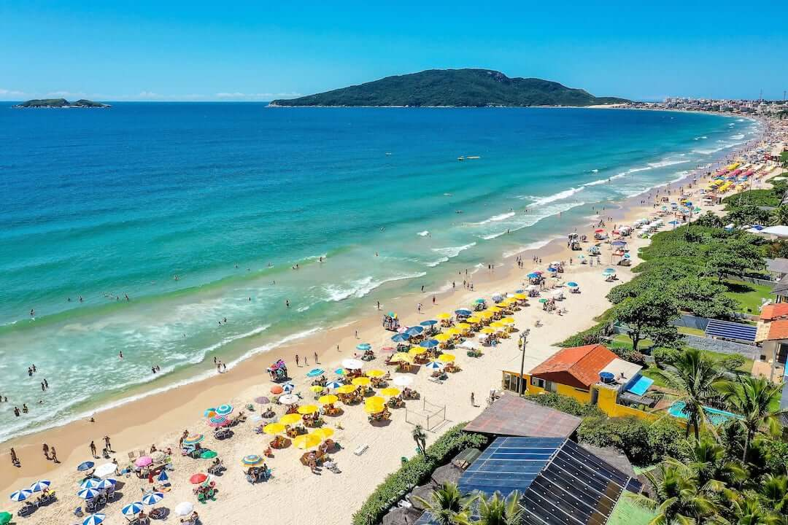
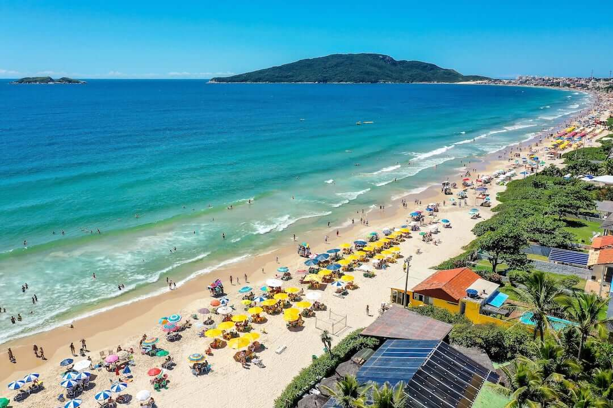
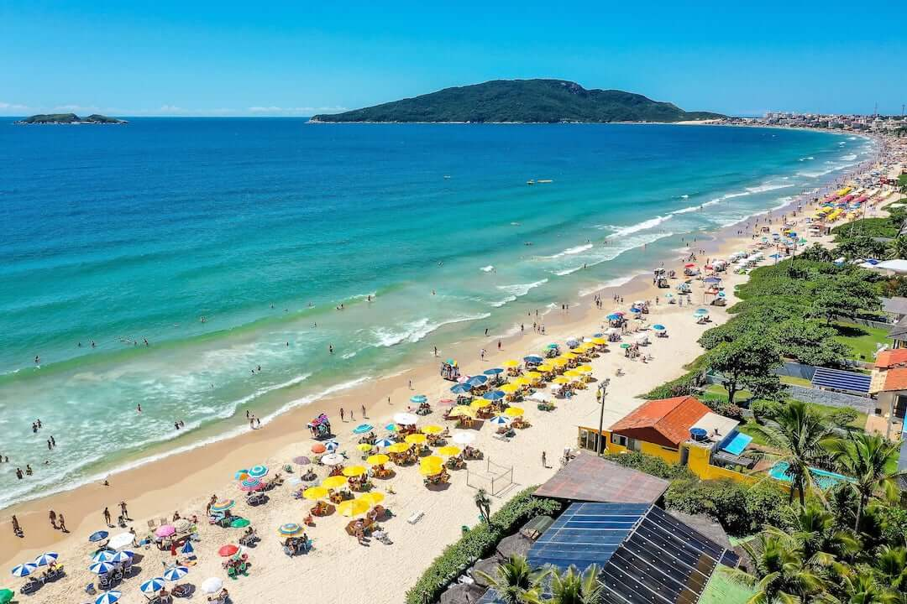
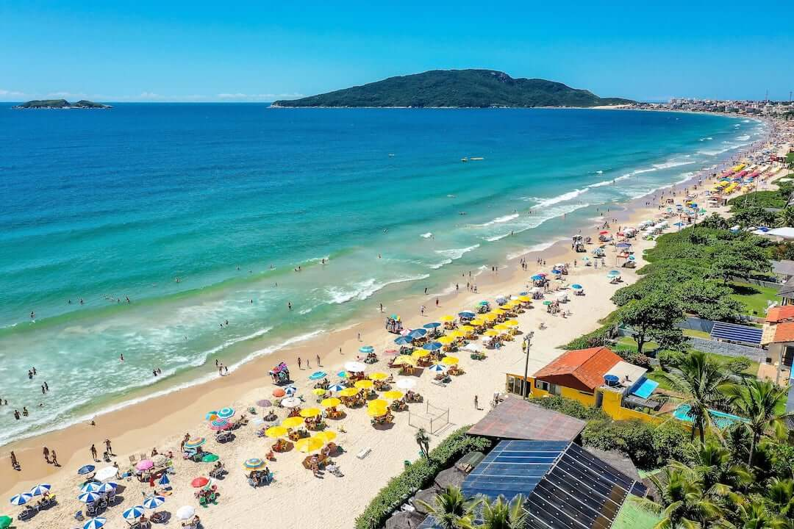

Tem praias maravilhosas, cachoeiras, dunas, lagoas, bons restaurantes, bares, baladas e por aí vai.
O
norte da ilha para quem gosta mais de agito, e o sul para quem quer sossego.
São trilhas e mais trilhas espalhadas por toda a ilha, que te colocam em contato
com a natureza
e te levam a praias desertas.